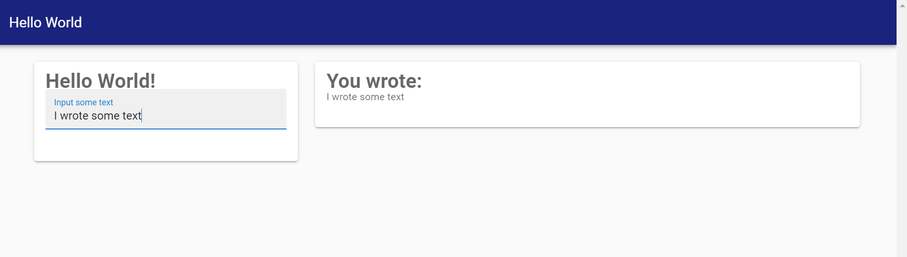

Getting started
Installation
To install the latest release run the following from the Pkg repl (type ] to get there):
pkg> add MatteYou can install the latest development version by running:
pkg> add https://github.com/angusmoore/Matte.jl.gitCreating your first app
Matte comes with a number of example apps to demonstrate how it works. Let's start with the hello_world example.
Open Julia and create a new Matte app, and populate it with the included hello_world app by running:
julia> using Matte
julia> matte_example("hello_world", "path/to/example")where path/to/example is an empty folder where you want to create the new app. Matte will create a new project at that location. Change your working directory to that location:
julia> cd("path/to/example")and open up the folder in your favourite editor. There are two files that Matte has created: app.jl and a Project.toml. Project.toml is a standard project file for Julia's package manager, for specifying your app's dependencies. app.jl (unsurprisingly!) is the app. It defines the server-side logic, and the UI. Open that file in your favourite editor. It should look like this:
module HelloWorldApp
using Matte
const title = "Hello World"
function ui()
sidebar_layout(
side_panel(
h1("Hello World!"),
text_input("my_input", "Input some text")
),
main_panel(
h1("You wrote:"),
p(text_output("my_output"))
)
)
end
module Server
function my_output(my_input)
my_input
end
end
endThe next guide will dig in to what makes a Matte app and how they work. But before we do that, let's run the app. First we need to activate the project, and load Revise (so that can make changes to our app without having to restart. You don't have to use Revise. But you should!):
pkg> activate .
julia> using Revise
julia> includet("hello_world.app")
julia> run_app(HelloWorldApp)Open your favourite web browser and visit http://localhost:8000. After a few seconds you should see a simple webpage that looks like this: 
You can type some text on the left, and it will appear on the right. Not very exciting, but it's our first Matte app!